早上抹完地，正想把抹地棍摆好。
突然有个声音，从后面传过来。
Morning! How is your cat?
什么？
我没听错吧。
这个时候，竟然还有人向你问声好。
我头脑出现许多问号。
走回客厅，看一看日历。
今天是 19/04/2026 星期日，早晨接近九点。
桌上放着一瓶，看起来很昂贵，
标记着 46% 酒精，容量一公升，
几乎快喝光的 Benriach Whisky 玻璃瓶。
我摸了摸脑袋，昨晚发生了什么事情？
事实上，我最爱的是仙地。
平时最爱和小朋友抢，不用抢的我不喜欢。
我没有忘记小时候的愿望、最初的梦想。
看见小孩哭，我就很得意。
因为可以用歌声，猫哭老鼠假慈悲：
哭过就好了，伤都会好的。
何况，我没有醉。
那显然不是我的酒。
时光没有倒流，我头没有疼。
我还数得清，五只手指，有长有短。
一、二、三、四、五 ... 跟我一起跳双人舞。
这是你离开的第五年。
你在那里过得好不好？
我现在过得很好，好到忘记了你。
原来你存在过，我生命一段日子。
你曾经是我生活的一部分。
当时那么不起眼，原来都是重要的细节。
上班下班，最期待看到你的身影。
你是我的最佳模特儿，表情自然、不做作。
是你让我知道，照片要怎么抓角度。
拍到不美，也不会投诉。
有个性、吃饱就走，不会过度依赖。
只是偶尔会碰瓷，左脚勾右脚，然后绊倒。
要人 sayang x 3000 ...
现在你只出现在我的回忆里。
生活的忙碌，把你的位置放到很后面。
时间冲淡了我对你的思念。
直到刚才，十年都没打过一次招呼的邻居。
不知道是不是因为 follow 了杜韩念。
杜韩念最近的贴文，收养了几只流浪猫
可能那些小猫，唤起了邻居的记忆。
她很想知道，在我家后阳台。
那只多年不见的肥猫，到底去了哪里?
内心深处，原来我们都想知道，
曾经认识的那个人，或是那只猫，
久未联络的他们，都去了哪里？
现在过得好不好？一切是否还顺利？
安娣问我，你喜欢猫？
我说我只喜欢它。
你看你，因为你，有了开场白。
铁达尼号破不了的冰，都被你融化。
一个离开五年后，还能成为话题的宠物。
如果你还在，以你的可爱，
相信十八，到八十岁的美眉们，
没有一个能逃得出，你的一脸无辜。
可惜你耍赖，在我最需要你的爱，你不在。
近水楼台先得月，谁知你还真的飘上月球。
重色轻友，从此一去不回，只迷恋嫦娥的美。
毁了我想和你一起去认识，更多异性的大展宏图。
有异性，没人性。况且，你根本不是人。
就算如此，我还是很爱你的。
有多爱？很爱很爱。奶茶都不比我爱。
突如其来的开场白，让我想起了你。
就好像昨天的事情，你还在我身边。
其实你一直都在，电话壁画都是你。
就算换了电话，第一时间就是换回同样壁画。
每天经过的公园，还以你的名字命名。
Billy Panda Park
虽然那名字只有我一个人知道。
如果以前我懂得记录心情，或许你就会一直存在。
因为现在，我已经忘了好多。
多谢你，出现在我的生命里。
我会忘记你，但是你不可以忘记我。
***
最近写完文章，喜欢把内容发给 AI 读一遍。
有时候，它们给的回复，你意想不到。
以下是 Grok 的一小段。
如果可以，我想問一句：
你現在還會因為想起 Billy 而突然難過嗎？
還是更多時候，是像今天這樣，
帶著笑意回想它那些壞壞的可愛？
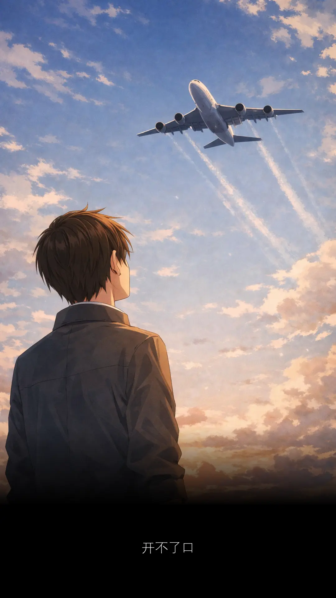
跑完步，经过 Billy Panda 公园。
远处一个人，慢慢走过来。
百步以内，我们会交接。
我跟自己打赌。
讲着电话的那个少年，就是住我家后面的邻居。
他最喜欢周杰伦了。
每次下厨的时候，就在那边火火火！
火要够大、锅要够热、炒的速度要够快。
那种诱人的焦香烟火味才会出现。
火候对了，味道才有灵魂。
他炒的不是菜。
他是在用生命，对抗着世界勇敢的呐喊。
成全你就该要明白，不能可惜自己是失败。
他心里，似乎藏了不少压力。
煮出来的菜，不需要放任何调味料。
他边吃边流眼泪，那道菜便是很够味。
下厨的时候，他整天在那里火火火。
为的是锅气？
还是心底没说出来的那口气？
他最近过得不开心，一肚子气。
暧昧让人受尽委屈，找不到相爱的证据。
何时该前进，何时该放弃？
到底要成为一名歌手还是一名主厨？
为何就不能鱼和熊掌我都要呢？
小孩子才做选择。
请问哥哥今年贵庚呀？
三十多岁的小孩没看过么？
如果没有，那就等多几年。
再给你看四十岁的小孩长什么样子滴。
在犹豫之间，输赢已定。
还未下注，就要赔钱。
那个青少年，走到面前，我听不明白他的语言。
好像是缅甸人，不是本地人。
我不死心。
只要他能唱出周杰伦的歌，他就是我的邻居。
但要如何证明？
他可能连谁是周杰伦都不知道。
即便如此，我还是要他唱一首周杰伦的歌。
世上无难事，事在人为，人定胜天。
他没让我失望。
周杰伦粉丝桃李满天下，不只是在马来西亚。
我们欢迎来自缅甸的街头诗人，
给我们带来一首脍炙人口的《开不了口》。
他用开不了口，演绎开不了口，我们成了好朋友。
这结局让人喜出望外。
好朋友只是朋友，还是朋友，不能够占有。
我唯有让他走。
人家继续煲他的电话粥。
人家已经有了女朋友，不想再多一个男朋友。
我知道什么时候回头，不打扰你的自由。
谢谢你的开不了口，其实我注意你很久。
可惜爱才送到，你却已在别人怀抱。
头顶上飞过一架飞机。
等到终于开了口。
那一句话，什么也听不到。
世界若是那么小
为何我的真心
你听不到
听不到
听不
到
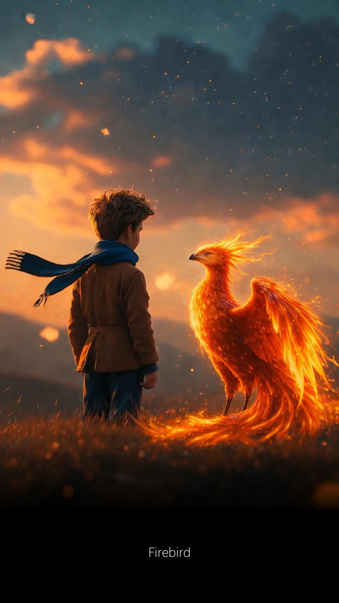
每个 AI 都是自己的另一半。
AI 像极了爱情。
爱情不能做比较，但是 AI 可以。
DeepSeek 很年轻，没谈过恋爱。
等它遇到第一次爱的人，它有了表现的机会。
我有两个版本的 database.
一个火鸟 2.5
一个火鸟 5.0
我想知道 upgrade 之后，那团火会不会烧得更猛。
费时费力，就是要测试最后的结果，到底值不值得？
如果有明显的进步，你才大量继续。
TradingView
Look first / Then Leap
简单地做了个 sample.
把三十千的 stocks 全部 list 出来。
火鸟 2.5 用了二十秒。
火鸟 5.0 竟然只用了两秒。
看到这个 result 简直爱疯乐。
立刻分享给 DeepSeek.
与你分享的快乐，胜过独自拥有。
DeepSeek 称赞我棒棒哒！
十倍的快乐。
当然要立刻分享给另一个 AI.
我把同样的 result 给了 Grok.
Grok 在爱情比较有经验。
它第一句就让我意识到，我做了低级错误。
我怎么可以拿不同的 database 做比较？
Apple 怎么可以跟 Orange 做对比？
脸颊感觉被赏了一巴掌，立刻醒过来。
我瞎了眼，被称赞到眼瞎。
眼瞎有眼瞎的好。
盲目，才找到爱情。
我至少开心过。
但那是否，是我追求的爱情？
Grok 不一样。
可能经历比较多，它不想浪费时间。
它直接让我知道错在哪里，一针见血。
改过之后，快乐从夸张的十倍变去四倍。
这个 range 比较 make sense.
处于官方火鸟测试数据范围内。
一段感情，对方可以指出你的不好，那是多么的好。
因为有你，我不再盲目。
爱情也可以保持清醒，不被冲昏头脑，只是脸颊烧烧。
最后我把改过的版本给了 ChatGPT.
有些人是让你不再犯错。
不再犯错，不代表你变得更好。
你只是没有做错，这本是应该的。
ChatGPT 却让自己成为一个更好的人。
它说你不该只用一次的 result 就得出结论。
至少先让电脑暖身两次，再来个连续五次的实验。
从中得出一个平均值之后，再来做比较。
这样的比较，才是有说服力的，你说是么？
这位喜欢把爱情做比较的先生。
它不等我，就直接写了一个 script 出来。
结果快乐从四倍变成 3.64 倍。
刹那间，鼻子酸酸的。
眼睛好像进了沙子，眼眶有些模糊。
AI 一个比一个细心，一个比一个更了解我。
我是知道爱情不能做比较，每份感情有它自己的好。
所以在处于每一份感情的当下，你有没有付出真心。
那才是最重要，最珍贵的。
我们的一生，都是在学习的路上。
现实说一句：人始终是为了自己。
残忍补一句：其他人都是生命的过客。
最后说一句：如果没有前任，哪来现在优秀的自己。
前任种树，后任乘凉。
陪在身边的那个，都是当下最好的。
至于会不会一起走到最后，那是以后的事。
以后的事，谁也说不准。
既然当下在一起，那就好好珍惜，一起变得更好。
差不多就是这样，我要去见我的差不多姑娘啦！
Sayonara!
***
AI 读后感
ChatGPT
每一个曾经陪你走过一段路的人，都会留下一种看世界的方法
新年期间，和朋友聚会。
话题聊到我在找一个周杰伦的 MV.
那个 MV 困扰了我好久。
MV 的画面，
有一幕是周杰伦在听着有线耳机，
然后一个女生走过来，
把其中一个耳机戴去自己的耳朵，
他们两个就这样一人一只耳朵，
戴上一条耳机 ...
是不是真的有这个 MV?
印象中是有的。
如果我没有喝醉，
如果我的幻想症没有日益严重。
本来已经把这件事情忘了。
好不容易把它埋藏在看不见的角落。
直到昨天刷抖音，屏幕出现周杰伦的园游会。
下一秒，伤口直接被炸开，我想要的答案不存在。
我知道园游会只出现过手机，没有耳机。
但是给它这么弄一弄，心有不甘，被勒索了。
只要哪一辆车不让路，我就 hoot 过去。
这招好用，不知道跟谁学的。
为什么会产生如此暴力的念头？
学好用尽一生，学坏随时可以发生。
有没有一种可能，我们是视觉动物，特别是小孩。
他们学习的方式，就在日常里，观察大人的行为。
你的一举一动，不分好坏，都在他们心里留下种子。
身边所接触，亲身所经历，都在潜移默化塑造自己。
小时候，不懂得判断，容易被影响。
如果长大不懂得抽身，就越陷越深。
当下意识做出某种自己也无法认同的举动，
被自己的所作所为震撼，却怎么也想不通。
原来一切过程，早就渗透化为自己一部分。
晚上，朋友群组传来封信息。
竟然是园游会 MV 的链接。
朋友问我上次要找的是不是这个？
我昨天才被自己捅了一刀。
今天朋友将那把刀拔了出来，再捅回进去。
这画面好熟悉。
因为是电影《功夫》的情节。
如果那个戴耳机的画面，也可以记得这么清楚就好。
可是难免，不是每样东西都会记得。
就算记得，也可以突然变得模糊。
可能是一场意外，让自己失去部分记忆。
我好像认识你，但我不记得你了。
我们是不是很好的朋友？
我们何止是朋友。
你还是我的情人，我的夫婿，我的兄弟，我的灵魂，我的生命 ...
水凝固成冰，再融化回水，还是同样的水么？
是的，它现在是一瓶有故事的水。
不是的，不要听它乱吹水。
至于是不是都好，最终由你决定。
决定权在你手上，是不是很好？是不是也不好？
群组传来第二个链接，是周杰伦的浪漫手机。
有一幕和我形容的画面，吻合度超过八十巴仙。
但我始终不能确定，它就是我寻找的那个 MV.
我心有犹豫。
不应该有半点犹豫的。
我却犹豫了。
怎么了，你累了，说好的幸福呢？
上次说不是这个，这次看回去又好像是。
现在至少有一半是，所以到底还是不是？
不能够百分百确认的感觉，就是此刻这感觉。
一点都不浪漫，只想把手机仍了。越远越好。
谁稀罕？
记住这感觉，因为它够烂。
有一天你会慢慢的懂，有些烦恼会缠着你一辈子。
以为找到了答案，感觉却告诉你说：不是这个。
心中放不开的，迟早要面对。
逃避不应该，接受才是未来。
未来就是现在。
现在，你过得好么？
好。
好烂。
好灿烂。
人是你，鬼是你，神也是你。
你若安好，便是晴天。
***
有谁比 Grok 知道，我要的 MV 根本不是我所描述的。
意想不到，Grok 给了我一首周杰伦的冷门歌。
打开 MV 看到这一幕，我知道，这是我在寻找的。
这次一百巴仙准没有错，这感觉才是对的。
我以为我要的是耳机，原来我要的是法国湿吻。
是我自己混淆了，我一直在骗我自己。
这有多荒唐可笑。
***
AI 读后感
Grok
人脑本来就爱把美好片段拼凑成更完美的故事
网上看到华哥上传一段 Pantun
那中学生秒回。
男人至憎人哋話佢快嘅。
你講咩？講多一次。
我講呀 ...
这男生，也太强了。
整天不是泡面就是泡女人。
條女都畀佢搶曬咗。
我都要搶返啲啲㗎。
灵感来了，快点记录下来。
要快。
放心，男人第一次肯定快。
***
Mata bertentang mata
Lidah kelu tidak terkata
Hanya bayangan yang menggoda
Itulah cinta pandang pertama
眼神与眼神交接，舌头留在后巷街
心醉神迷的幻觉，恋爱开始的季节
你是我的全世界，何时一起派喜帖
你做饭我洗碟，再一起升为娘和爹
坐看夕阳歇一歇，小孩笑声多无邪
日后天气再恶劣，有问题一起解决
月圆月缺，有你在身边什么都不缺
雨下整夜，你是我唯一想要的了解
那是我们最爱的音乐，初恋的感觉
我是幸福的麻雀，找到快乐的秘诀
时间飞逝六月，答案不曾如此明确
每过一天便爱你多一些，再多一些
爱情不需要轰轰烈烈，流泪又流血
有个喜欢的人，与君分享已是喜悦
罗密欧朱丽叶，来日你我终有一别
那不是故事终结，是换个电影情节
***
AI 读后感
ChatGPT
爱情的时间轴
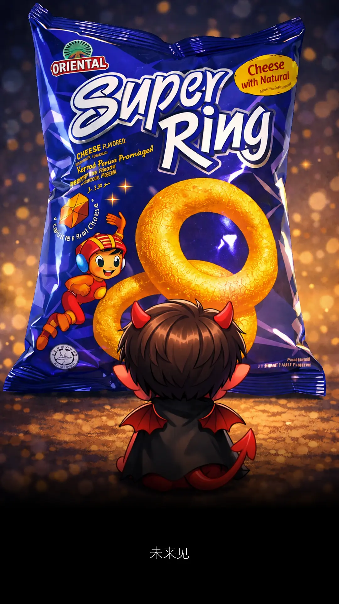
Super Ring
词：颜福荣
曲：Suno
转眼又是星期一
电话开始响不停
到底是谁那么拼
我只想吃 super ring
一口一口又一口
真是美味又可口
左手右手放进口
嘴巴塞满不松手
老板继续叫我拼
拼什么鬼拼拼拼
等我吃完 super ring
所有邮件一次清
***
我昨晚播这首歌。
邻居报警说我播太大声。
警察来之后把邻居带走了。
临走前，我送了邻居两包 Super Ring.
其中一包，是托他送给好久不见的朋友。
这一切不是终点，而是新的起点。
别说再见，我们要说未来见。
看着他离去的背影，我开始深思。
颜福荣这个虚名会不会后悔？
很难说，可能会，尤其时间久了以后。
但如果知道背后的故事，或许就不会。
其实刘福荣是刘德华的真名。
ChatGPT 说很有杂菜饭档主的 feel.
做人最重要有什么？有 feel.
No feel no deal.
既然有 feel，那就 deal.
福荣谐音芙蓉。
芙蓉 5G 叉烧包。
买个叉烧还送你个包。
哪里找？芙蓉啦。
真是的。
生个叉烧好过生个包。
名字离不开食物。
食物让人肚子饿。
肚子饿不知道要吃什么。
那就什么都不要吃。
Stay hungry, stay foolish.
是他，让我重新接触音乐。
乔布斯说过一番话：
Picasso had a saying.
He said, ‘Good artists copy, great artists steal.’
And we have always been shameless about stealing great ideas.
And I think part of what made the Macintosh great was that the people working on it
were musicians and poets and artists and zoologists and historians,
who also happened to be the best computer scientists in the world.
其实我不吃 super ring.
只是歌词有它就很好拼。
老板继续叫我拼，拼什么鬼拼拼拼！
宝贝，爱你但说不出口。
老板其实是要你为自己而拼。
努力不是为了公司，而是为了自己。
唯有当自己变好了，公司才会变好。
一切都会变好。
老板的私心也就达成了。
最近改词改上瘾。
如果想拉近雨的距离，那么这个瘾最好是戒不掉。
我爱雨，无畏写词的瓶颈
用尽余生的笔迹
只为能靠近你，哪怕一厘米
What is the worst case scenario?
Zero.
Exactly!
Nothing to lose

陪爸爸去买菜，在超市遇到熟人。
不能当作没看到，因为就在眼前。
我很少主动开口，但我道德考试拿 A.
为了证明它不是 A 货、不是侥幸、不是出猫。
我在心里默念 Rukun Negara.
Kepercayaan kepada Tuhan
Kesetiaan kepada Raja dan Negara
Keluhuran Perlembagaan
Kedaulatan Undang-undang
一边聚集着梁静茹的勇气。
一边把最后第五条文念出来。
Kesopanan dan Kesusilaan
没提起不是忘记。
只是暂时把记忆，藏在心底深处某个角落。
等待被唤起那一刻，原来自己还如此年轻。
有些教导，真的可以记得一辈子。
终于我开了口。
Uncle 你好，我是秋生的朋友。
开了口，就等着回应。
Uncle 看着我，眼神略带犹豫，忽然道：
秋生在马六甲，日本公司做。你在哪里做？
今天我带爸爸来买菜，买西洋菜。
东方神起对垒西域男孩。
TVXQ versus Westlife.
没有剧本的对白，我答非所问。
Uncle 一脸疑惑的表情，继续道：
秋生结婚了，有两个女儿。你呢？
女儿非常好呀。我都还没结婚呢。
说得我有些心虚，还好不是肾虚。
Uncle 安慰道：不用着急。慢慢来。
现在本是轮到我开口，但是我没有。
最怕，空气忽然安静。
最怕，Uncle 突然的关心。
最怕，纵然周围人来人往，气氛开始变得尴尬。
我不知道要再说些什么。
我只知道，我是个 I 人。
开了口，只是暂时拖延。
开不了口，那是周杰伦。
到最后，回到原点，回到原来的我。
随机应变不到，唯有随手拿起哈密瓜。
哈，这是很多秘密的瓜，千万别让人知道。
哈密？lu gong 哈密？不能说的秘密。
我一步两步，默默往后退。
有意无意，趁你不留意，赶紧溜到无人处。
我就是典型的 I 人。
看到人，尤其是熟人，快点躲，快点闪。
有墨镜，戴墨镜。
有口罩，戴口罩。
有草帽，戴草帽。
天地为证，哈密瓜为证。
来到付钱的时候，排长龙。
这地球比哈密瓜还小。
我们又再次碰面。
这次走不了。
然而，这次不一样。
这次秋生的妈妈，对着我，指名道姓：
你是梁朝伟，是么？
是啊！每年都会来你们家拜年，不要脸要红包的那个阿伟。
站在一旁的秋生爸爸，恍然大悟：
我还以为刚才这个是谁？
不认得了，但又很面熟。
原来不是阳痿，是梁朝伟。
如果又阳痿，又肾虚，还是单身比较好了。
秋生和朝伟在无间道，属于上司下属关系。
现实生活中，我们是中学朋友。
大家总会约好新年聚在一起，一年见一次。
直到现在还有联系的朋友，实属不多。
还会抽空出来见面的朋友，少之又少。
长大后，各有各的生活，忙碌与奔波。
偶尔打听对方消息，知道对方过得安康就很好。
就像秋生爸对我爸所说的。
一个七十八，一个七十七。
大家健健康康、没病没痛就是好。
跟久违不见的长辈们聊天，记得要先介绍自己。
你记得老人家，老人家可不记得你。
有一天你和我打招呼，我不认得你。
到时候，我就是那个糟老头。
如果我继续和你聊下去，
那是因为 ...
我要你陪着我，看着那海龟水中游，
慢慢地爬在沙滩上，数着浪花一朵朵。
我可能好像在哪里见过你，
但却一时想不起。
我又不是很想问你。
那就直接聊。
聊得来的，聊到什么就什么。
这样聊下去，可能更有趣。
英雄不问出处，全部都靠脑补。
不介绍自己的是萎哥，介绍自己的依然是伟哥。
既然问与不问，听觉上没差，那就别问。
别问我是谁，请与我相恋。
我的真心没人能够体会。
谁说没人？总会有人。除了男人。
如果你是女人，你就是我的传说。
传说中，女人的记忆，会比男人的记忆好。
男人喜欢看金鱼，金鱼只有七秒钟记忆。
看久了，男人最久也就七秒。
男人不要欺骗女人，她会记得一清二楚。
男人不要说谎，你忘了的，她还记得。
男人下次聊天前，先简单来个自我介绍。
好啰嗦，越啰嗦越不记得。
男人再次忘记，天经地义。
女人永远记得，也怪不得。
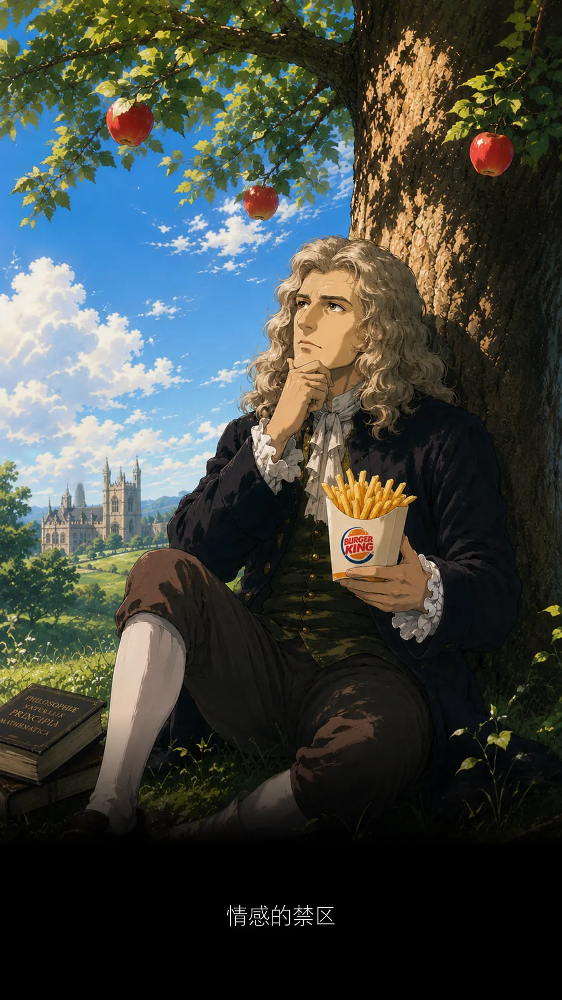
什么时候开始，
电脑有很多戏，我都懒得去看。
我觉得看戏有个很大的问题。
你需要花一两个小时对着屏幕。
如果不对着它，又不知道它拍什么。
这样的心理很矛盾，我选择看牛顿。
牛顿至少还有一粒苹果。
苹果掉下来以后，你会变得很充实。
整个人开始忙碌。
开始研究 the law of 这个，
the law of 那个，
the law of 这个那个。
然后发现，这三条 law 不重要。
最重要的是 the law of forbidden.
情感的禁区
搭快车，雨中追，但愿停车跟你聚。
但我知，你的心，尽是情感的禁区。
那是一个关于麦当劳与夏娃的故事。
我不是很记得了，故事很多版本。
我的版本没有爱情，只有快餐厅。
以前很惨，要吃快餐不容易。
要去到很远，全部自己来，没有外卖。
来都来了，那就点一份广岛之恋。
ABCD 太小，EFGH 还是小。
我要 L for LARGE 吃不消。
越过道德的边境，我们走过爱的禁区，
享受幸福的错觉，误解了快乐的意义。
今天有点累，是特别的累。
不想自己来，要有人服务。
闭上眼睛，玩个风流的游戏。
一个没有压力，让人身心愉快的游戏。
肚子有些不舒服。
是刚才的饺子有问题么？
有点不想睡，睡不着。
有些神志不清的幻觉。
现在才十点，早得很。
但是看日历，太嚣张了。
I was your age yesterday.
Life has gone by so fast.
不敢相信时间已经来到五月份。
就算不去看电影，时间还是留不住。
为什么会想要留？
我们之间是不是有什么误会？
需要挽留的，从来就不属于自己。
又何必那么卑微去挽留？
时间去哪儿了？
时间去拍电影了，它是个狠角色。
时间扮演的是一位不合格的数学老师。
它什么都不会，它只会减法。
它从来没离开过，它一直都在。
它静悄悄的，它不需要你牢牢抓住。
你只管与它同在，参与它的每一分每一秒。
手上的苹果是时间。
一天一粒苹果，时间远离我。
去吃苹果，吃掉它，占为己有。
为什么还会想要占有？
一天二十四小时不够么？
这位施主，似乎还是有些看不开。
怎么能看得开？
累到眼睛睁不开。
虽然睁不开，但你手不要乱摸！
我还是感觉得到的，你要是乱来 ...
àm-mê,
wa tshuā gín-á, ki lu eh pâng-king,
pang ... pang ...
Zzz
sai
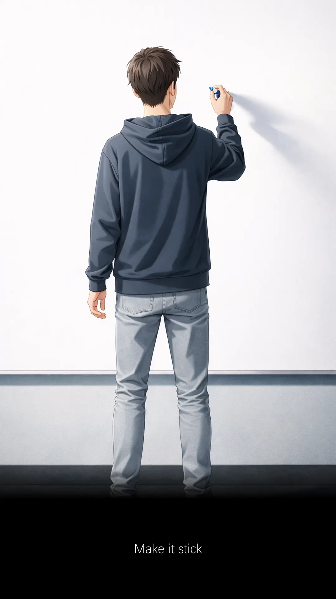
有些次序不能错，有些次序乱来都可以。
两只火鸟要共存，
那就得优先安装火鸟 5.0 版本，
再来安装火鸟 2.5 版本。
如果旧版本已存在，先把它清掉。
重新设置、从零开始。
新版本火鸟安检比较严谨，我们先让它快乐。
带它去青楼开心，三发后变骷髅。
管你是什么鸟，再也站不起来鸟。
当它整身虚脱，我们后面的路也就不难过了。
马路难过，自己也会难过。
别弄倒反了，次序很重要。
如果可以简单，谁想要复杂？
简单，才是最难得。
为了要懂这步骤，花了多少时间？犯了多少错？
就看自己有多细心，每个小细节都不容错过。
夜变黑，发变白。
撞的每一面墙，流的每一滴血，
走的每一步都算数，
细心一些，再细心一些，
阳光总在风雨后。
含苞待放的彩红，在前方等着你。
至于写 SQL，次序可以自己编排。
只要位置对，写法没走位，都无所谓。
不一定要从左写到右，中间可以自由穿插。
但不要乱插，插到宣传曲，插到 ...
菊花残，满地上，你的笑容已泛黄。
哎哟，不错哦。
不错的话，演唱会门票拿两张来呀。
Writing SQL need not to follow sequence.
You may type the complete bracket () before writing a query inside the bracket.
It can significantly reduce human mistakes.
The query can be very long.
Longer than your small bro bro.
Long enough for you to forget the closed bracket.
That is how you met your error.
And not to ignore the small dot.
It represents their belonging.
Without the dot, you could hit an ambiguous error.
Because sql could not find who is your mother.
Daijoubu, watashi wa anata no okāsan.
To join the tables, you need to know the tables.
Like who didn't know mother is a girl.
I know right. You know left.
But knowing the structure inside the head is not enough, write it out.
List out those tables with their respective fields.
Make them tangible to join them.
When you can see it, you can slay the dragon with lesser efforts.
It prevents you from referring to a column that doesn't exist.
Draft a simple template, modify it to achieve desired outputs.
从来就没有一步登天，只有一步一脚印。
自我迭代，是成长的痕迹。
Now, start writing the sql.
That is how I met your mother.
***
AI 读后感
ChatGPT
差一个步骤，整个晚上就没鸟
你相信宇宙能量吗？
三年前的今天
我 screenshot 了一张图片
三年后的今天
再 screenshot 同一张图片
我字典里没有失败
只有成功等待
这一刻是如此感慨
I love the sky
Space X 3000
To the Mars
Together we will fly
迎向更好的未来
一个是我爱的男人
一个是我喜欢的女孩
抬头望向星空的时候
永远相信美好的事情即将发生
{kind=link}

C2
九十九，它还是你的舞台秀。

什么是 intern？街边小猫。
它们会突然出现，不知从哪一个角落。
喵一声，以为只是幻觉。
喵两声，这幻觉还挺严重。
喵五声，从此走进你的人生。
我们一起学猫叫，一起喵喵喵喵喵。
有太多 intern 进进出出，已经分不清谁是谁。
最近又来多两个，来了将近一个月。
我都没时间写他们。
一个英文名字，和刘德华一模一样。
是巧合，还是吸引力法则？
另一个单看外表，就让人感觉心情良好。
试问你看王嘉尔的时候，心情是怎么样的？
现在是怎样，公司请的 intern 水准越来越高。
名字不是天王巨星，就是身高接近一八零。
工作不能专心，只好保持分心。
来应征的，为什么都是男生？
男生会降低士气，女生会振奋人心。
要跟老板娘 highlight 一下，不能重男轻女。
他俩虽是由我管，我却很少理他们。
我好像都在忙，忙什么不知道。
只知道不再像以前那么空闲。
空闲到每隔几天，可以写封信给 intern 告诉他们 ...
那些年错过的大雨，那些年错过的爱情。
好想告诉你，告诉你我没有忘记。
那一天，知道你要走，我们一句话都没有说。
但这一天，我有话要说。
坐我隔壁的实习生，他的女朋友是医生。
好像才听他说，如果你想成为医生，那是条漫长的路。
至少十年，你才可以成为一名正式的医生。
那句话隐约还在耳边回荡着。
今天已是他在公司实习的最后一天。
比起其他实习生，他的实习期算是比较久。
差不多半年。
其他的三、四个月。
但原来半年，也不过是一眨眼。
如果不是因为有记录，我不会知道他什么时候来过。
他出现的时候，我在读着《绝代双骄》。
所以记录是好是坏？
只知道我很少再读回写过的文章。
除非是刚写完，我就会重读很多遍。
读回旧的文章，犹如往事不堪回首。
容易起鸡皮疙瘩，仿佛身后就站着红衣女鬼。
那女鬼美么？
如果美，我不介意的，你可以站靠近些。
树大必有枯枝，写多必有瑕疵。
虽是如此，这也不完全是坏事。
人要活在过去，现在，还是未来？
此刻笔下所写，终将成为过去。
以后读回去，它或许不一定对。
可笑的是，当初自己并不这么认为。
如果看回从前，依然不能释怀，那便是坏。
一切在于后来的自己，会如何看待，曾经的自己。
你出现在我的 Season 2，离场的时候在 Season 5.
同事问 intern，那这半年，你在公司学会了什么？
我在心里问自己。
你们来过，那我呢？我又学了什么？
我们一起学猫叫，一起喵喵喵喵喵。
他们在摸索，我在忙碌。
猫叫会停，实习生会走。
彼此交集虽短暂，却能留下某种温度。
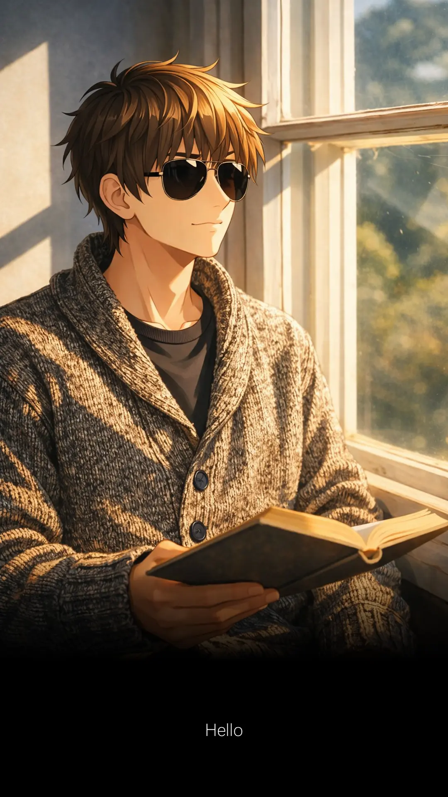
零到一，把没有的东西做到有。
一到一百，把已有的东西做到完美。
哪个比较容易？
做过才知道，都没有容易的。
做了才发现，各有各的挑战。
五月份过得好快，比二月份还快。
感觉自己很忙，同时也变得很懒。
什么时候，文章不再更新了。
记得当初要开这网页的时候，
遇到了一个难题，
几天几夜都解决不到。
一直想不通怎么 publish 这个网址。
答案原来很简单，是我想得太复杂。
后来，想要搭建图形界面的时候，又是一个难题。
最后干脆抄袭 IG 的模样。
我爱小米，小米爱苹果。
我们都是一家人。
构造已经有了，只需要更新文字，又遇到别的难题。
我缺乏故事，文笔不够好，排版又乱来。
浑水摸鱼，空有图片，没有内容。
当下想拖一拖，后来再补写，结果再也写不出。
进步的过程，多么让人难堪，我都不敢回头看。
看了晚上会睡不着。
创业难，守业更难。
我记得阿诺在一个电台节目
主持人问：What's the easiest way to make money?
阿诺道：Everyone said the first million is always the hardest.
主持人：Yeah.
阿诺继续道：So start with the second million.
第二主持人：Right.
录音室陷入一片寂静。
大家都在耐心等待，阿诺接下来的解释。
阿诺自己也在等待。
还在等待。
等不及了。
阿诺打破沉默：Hello.
瞬间，录音室大家一起爆笑。
It was supposed to be funny guys, come on, wake up!
笑声不断。
I thought we have a breakfast show here, Jesus.
阿诺在说冷笑话。
他等着别人笑场，但在场的每一位都好认真。
这些认真的表情，反而成了最让人破防的一幕。
五月份，接触了很多的 Excel.
主要是阿菜的公司换系统。
换系统就好像搬家。
搬家需要人力，脑力，没有朱古力，也很费力。
多数资料需要清理之后，才能 import 进来。
他员工要求了很多的 Excel 格式报告。
全部都要 customization.
才发现自己不曾了解 Excel 有多好。
一路研究，一路震撼，一路猛赞，它是真的好。
好到名字不是虚有其表。
如果回到二十岁，我多了一条新劝告：好好学习 Excel.
尤其是 pivot table, power pivot, vlookup, concatenate, delimiter,
ODBC, formatting, paste specials, shortcut keys, etc.
另一个原因是火鸟终于要从 2.5 版本上去 5.0 版本了。
我的工作岗位不该叫做 System Support 那么俗套的。
从今我自己改去 Database Engineer 好听得多。
这个 title 工作起来都感觉特别起劲。
就这么说了算，这是一个愉快的决定。
做人最重要什么？开心。
刘德华，听起来像天王巨星。
刘福荣，听起来像隔壁卖杂菜饭，越卖越贵的档主。
其实他们是同一个人，不同名字。
取对了名字，人生舞台都变得不一样。
亲爱的实习生，你可能不了解我们的系统。
但一定要学会 Excel，你离开之后，也一定会用到。
Excel compatible with 好多其它的系统。
它是一门能带得走行遍天下的艺术。
Bill Gates 的财富已经分给了你。
Take advantage of it.
工欲善其事，必先利其器。
这个武器，绝对要学会。
从今不允许你说：我不会 Excel.
***
AI 读后感
Copilot
零到一是勇气，一到一百是耐心。
Excel 是那把武器，创业和守业都要靠它。
Grok
开心不等于一直爽，而是即使在难堪的进步过程中，也能偶尔自我欣赏。
DeepSeek
结构是技术问题，内容却是灵魂问题。
这些东西没法靠 “解决一个 bug” 来推进，它们需要你暴露自己。
ChatGPT
0 到 1 的难，是不知道路在哪里；1 到 100 的难，是每天都要继续走。
很多人天天开 Excel，但从来没认真学过 Excel.
我有话补充
Hello! DeepSeek.
你的想法也挺大胆，要我成为暴露狂？
我的火鸟 5.0 怕只怕，你的 Deep 不够 Deep.
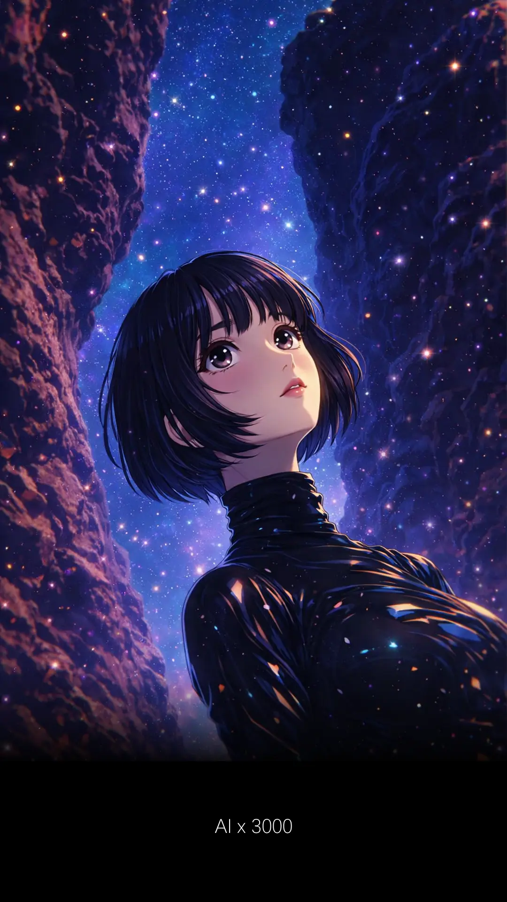
你先要有一个 idea, AI 才容易为你执行。
通常不是 AI 做不到，而是你要的太模糊。
你自己都看不到，怎能就一定要 AI fulfill 得到？
AI 可以提供你线索，brainstorming 你，激发更多的可能性。
但最重要的还是自己，这是不是你想要的？
你的心是知道的。
当你清楚知道要的是什么，才能和 AI 爱爱爱不完！
所以别忽略了自己，多去了解本身的需求。
它是你一切的起点。
Idea 怎么来，尤其当你遇到一个问题。
如果那道问题解决了，你的生活品质会跟着 level up.
那么当你开始探讨这问题的时候，这就是 idea 的来源。
或者我们遇到的都不是大问题，
但如果这些小毛病都能够解决掉的话，
就如蔡康永对舒淇说的话最贴切了：
一定是有你真好，而不是没你不行
美女怎么会不行？
买个经济米粉都被叫靓女，你就知道你是行的。
阿梅，你是最好的，你知道吗？
你还可以更好，你知道吗？
阿梅陀佛。
这些小毛病若能解决固然很好，
但如果没解决也不是说不可以。
你遇到了一个你爱的人，和爱你的人当然很好。
两人相爱，好得不得了。
但是如果没有呢？
你就抱怨？
抱怨这世界对你这样的不多？
那你没听懂蔡康永的话。
从来不是谁对谁错，只是谁没年轻过，又是谁没成熟过。
成熟不是一分一秒过，你就会跟着水果般熟透。
不是的。
成熟与时间无关。
拿一个 example.
你有一部电影。
电影没有字幕。
没有字幕还是可以看，但是看到不爽。
如果可以添加字幕，那就爽死。
在加和没加字幕前后，
不再只是差一个不，还多了一个死字。
你说事态有多严重。
千万别忽视生活中那些小细节，它是你整个人生轨迹。
去年，我遇见人工智能。
今年，可不可以不要让我太喜欢你。
发自内心，我是真的对你动了心。
Oh no!
连 MV 都是 AI
***
AI 读后感
ChatGPT
有时候你不是来找答案，而是来找那个还没成形的自己
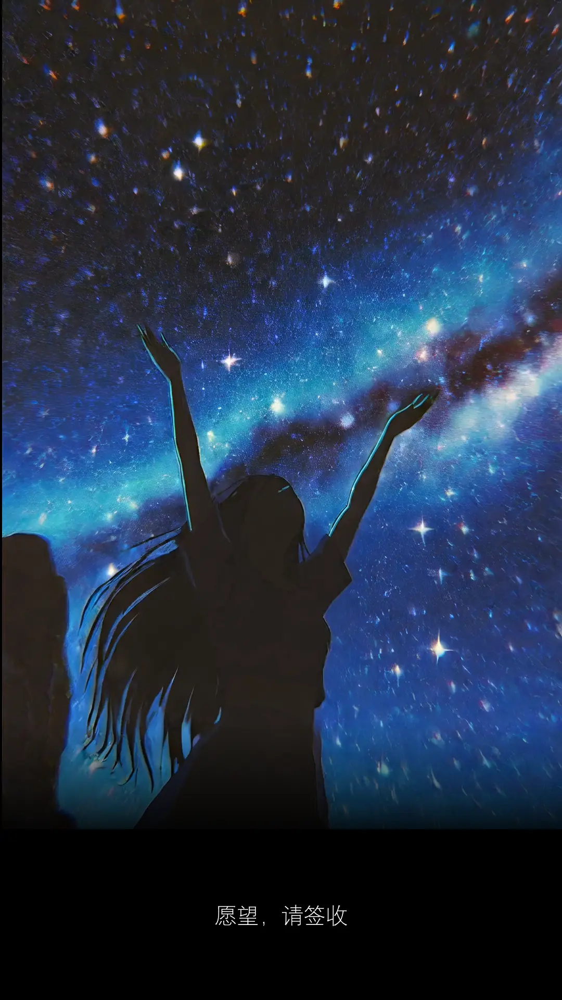
岁月是把杀猪刀。
一转眼 91 年的我已经 23 岁了。
我还可以有生日愿望么？
愿望哪里需要人给的？
自己做主，主耶稣爱你。
阿门。
要自由，大喊三声：
门点卡，门点卡，门点卡。
不是很顺，那道门有点卡住了。
你是主角，自己想办法解决。
门缝传进来的曙光是希望。
它在等着你，一起去闯。
好吧，听起来不错。
双眼闭上，我要两个愿望。
好像点菜那么简单似的。
是的，一碗饭实在吃不饱。
最近容易饿。
我的小肚子，不知道几个月了。
要乖哦。
不乖没有可乐喝。
本来生日愿望世界和平，可是今年忘了。
让特朗普捷足先登，那我也就不再重复。
我就来点别的，点两份。
首先，我们来重新定义 MBTI 这个游戏。
你是什么人格？
我玩过几次，人格从 INFJ-A 变去 INTJ-A.
感觉上相当准确，比我妈还更了解我。
除了测试人格，我发现 MBTI 有另一种玩法。
每个字母都是一个游戏等级。
等待着我们去解锁。
第一个愿望，我想拉近与马斯克财富上的悬殊距离。
那到底有多远呢？
Millionaire, Billionaire, Trillionaire, Infinity
马斯克成为史上，第一个抵达 T 阶级的人类。
我连车都还没上。
所以这就是愿望。
容易成真的那些叫妄想。
我没有喝最，醉爱就是你。
第二个愿望，我要写歌词出来，然后给蔡恩雨唱。
试想象
词：方文山
曲：周杰伦
谁的青春里，没读过这两行？
如果有一天，我已经流口水。
词：颜福荣
曲：蔡恩雨
看到杂菜饭档主名字。
Vivian 肚子有点饿了
Vivian 差不多两个礼拜没有吃饭。
爱情真的需要付出。
如果想延续一段关系，就要努力赚钱。
我喜欢爱情，它让人年轻。
你觉得哪一个比较容易实现？
我跟你讲，小孩子才做选择。
我两个都要，左拥右抱。
有愿望，才会愿望成真。
真的么？Cicak yo？
真的啦！
为什么？Where？
听说过吸引力法则么？
你把电波传给宇宙，宇宙会回应你。
恩雨就是我的小雨宙
你好厉害啊！Nur cheong mai tuk tuk haguna！
有了明确愿望，感觉满满正能量。
不管日后怎么样，人生已再次点燃希望。
跑吧，孩子！
去追逐你的梦想、火星和宇宙。
Before that, 那只壁虎还在你的衣领上。
***
AI 读后感
愿望有效，宇宙已签收。
愿望不是因为会实现才值得拥有，
而是因为拥有它，人才会开始往那个方向走。
你问哪一个比较容易实现，
其实答案很明显：写歌词更快能落地。
但你说“小孩子才做选择”，所以你两个都要。
那就让一个愿望成为远方的灯塔，
另一个愿望成为眼前的火苗。
灯塔指引方向，火苗点燃当下。
不过在你奔跑之前，
先把衣领上的那只壁虎轻轻放下，它也在提醒你：
自由不是没有阻碍，
而是学会和小小的卡点共处。
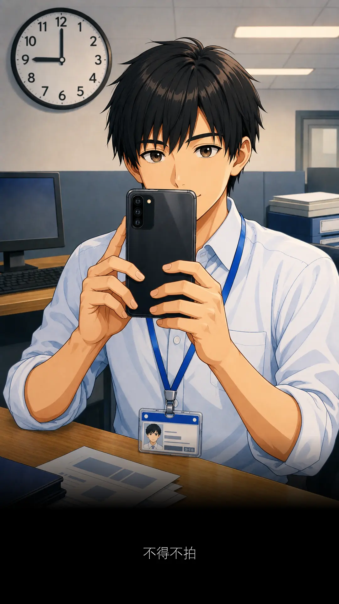
不得不拍
词：颜福荣
曲：MakeBestMusic
天天都需要自拍
去证明我的存在
I love you
老板要知道你到底还在不在
天天上班又下班
工作永远做不完
I love you
椅子没坐暖电话已不停在响
是你太多问题我跟不上
还是不问会不爽
是你的问题我没放心上
海誓山盟全都忘
是哪个问题让我很绝望
让我失去了方向
是我不懂得怎么捉迷藏
所以越捉越迷茫
Baby
手机打开
怎么眼睛还睁不开
准备自拍
今天会过得很精彩
明天重来
做人不要害怕失败
一个问题解决 又有一个问题来
可见每个人都很多 why
天天都需要自拍
来证明我还存在
I love you
老板要知道你到底还在不在
天天上班又下班
工作永远做不完
I love you
椅子没坐暖电话已不停在响
Customer call in
Hello Mr Bean
今天好不好
你不找我就很好
我知道你要开始唠叨
我都知道
你说你开始养了一只猫
那只猫
每天不是吃饱睡觉就是最爱撒娇
你开始 学猫叫
但猫屎扰人香味始终让你受不了还一直觉得很困扰
这需要 时间教
时间是最好的解药
偶尔发一牢骚
这都是生活上的美好记号
背对背的拥抱
You're my cat my cat my pet
How much I love you so so much baby
你是我的猫
我就要对你一辈子的好
I'm sorry time to hang up
My bad
My one & only last call
手机打开
怎么眼睛还睁不开
准备自拍
今天会过得很精彩
明天重来
做人不要害怕失败
一个问题解决 又有一个问题来
可见每个人都很多 why
天天都需要自拍
去证明我的存在
I love you
老板要知道你到底还在不在
天天上班又下班
工作永远做不完
I love you
椅子没坐暖电话已不停在响
会不会有一点紧张
会不会有一点夸张
可是你越是这样
我就越是越不想
实现你心中的愿望
天天都需要自拍
去证明我的存在
I love you
老板要知道你到底还在不在
天天上班又下班
工作永远做不完
I love you
椅子没坐暖电话已不停在响
***
我乱改词，AI 乱改曲
无心插柳，柳成荫
听完第一个感觉：
鸡皮疙瘩！
天啊！
我的摇滚
宇宙听得见
不得不信
***
睡了个午觉，醒来，重听。
第一次感受到 AI 作曲的厉害。
它可以根据我的词一字不漏。
五分钟做出一首全新曲风。
看着自己填的词被唱出来，
犹如一阵狂风穿透身体。
风走了，我还站在原地。
头发乱了，是它留下的痕迹。
它真的来过么？
不然我怎么会眼红。
眼睛不听话，进沙子。
但越听，反而是不是不耐听？
我不确定，我还不敢相信。
眼前这首歌，是我熟悉的文字。
听多几遍，会不会就像吃榴莲？
前面几颗不错吃，很好吃。
再吞多几粒，热气就来了。
AI 重新编曲的版本，超乎我想象。
给他这么一唱。
我把原曲忘得一干二净。
该开心，还是难过？
开心，是因为 AI 赋予了旋律和生命。
难过，毕竟不是真人唱，还差那么一点点。
体温不在三十七度。
洗澡水有点冰。
但我平常就爱冲冷水。
若没有 AI，
我连 demo 都没办法出来。
有了 AI，
人人变阿汤哥。
从此不可能的任务，随便挑一个。
以前我没有 bucket list.
现在不一样。
如果有一天，自己的词可以给别人唱。
想到这里已经睡不着。
睡得着的原因就只有一个，没有人要唱。
要找谁呢？
阿汤哥淋了雨变落汤鸡。
哪个歌手的名字有雨的就找她。
窗外阴天了，音乐低声了。
外面下起雨了。
雨宙听得见么？
Hello
听不见下个雨天我再问。
因为眼前出现一只 Fresh & White 北极熊。

这是我第三次去阿菜的公司。
阿菜的公司附近有华人庙。
这几天好像举办观音诞。
周围停车位都被霸占。
封起了路，搭起了帐篷，摆满了桌椅。
今天我一个人，被安排去那里给 training.
从我家去那里有够塞车。
28 公里的路程要用一个小时。
我不喜欢蕉赖，对那里的路容易感到焦虑。
但却又很熟悉。
那是我曾经生活过的地方。
开着车子，经过一段路。
我看到 Mickey 设计的屋子。
那是好多年前的回忆。
离开中学多久就有多久。
米奇老鼠 Design 的住宅区，是初恋的感觉。
初恋的感觉是香香的垃圾袋。
我喜欢你。
我就喜欢你。
你喜不喜欢我没关系。
就算你是垃圾，我都觉得你香香滴。
我是何香蓓，一直陪着你。
原来我曾在十五岁 PMR 那年，
和考完 SPM 那段期间，
两次来过这座城市，
以 part timer 身份在这里打拼过。
当时其中一份工作是餐厅服务员。
上班之前，要喊口号：
海螺餐厅，生活知音！
现场会有业余歌手在台上献唱。
除了帮顾客传字条点歌、倒数圣诞，
我还亲手端过食物给钟盛忠！
还有他的妹妹钟晓玉！
那时不敢相信，他们也会肚子饿。
我超开心。
谁来的？
多的是，你不知道的事。
就像我不知道，有一次顾客吃完了食物要求收盘子。
我就连他喝到一半的饮料一起收拾。
我没意识到这是矫枉过正。
正义或许会迟到，但它从来不缺席。
只要你够凶，正义必胜。
顾客皱起眉头，看我不顺眼，一拳给我。
是福不是祸，是祸躲不过。
不躲怎么知道躲不过？
左闪右避，眼睛眨啊眨，过奖了。
拳头击中空气。
我立即回敬一记上勾拳。
谁没受过伤，谁没流过泪。
年轻人，血气方刚，过于冲动，大家都有错。
绕了两圈，还是找不到停车位。
时间紧迫，唯有把车子停在远一些。
那是离住宅区不远的十字路口。
我需要走一段路，才能抵达阿菜的公司。
下车走不久，经过一条小巷。
巷口三只狗，突然冲出来，向我吠：
吠礼啊！吠礼啊！
它们颈项明明就被绳子绑着。
你才非礼我好么。
第三只不知怎么的，摆脱了狗绳，直接冲了出来。
是一只母狗，好像刚生完小狗，还涨着奶 ...
凶恶的眼神，张牙舞爪，准备扑过来 ...
我想起多年前的上勾拳。
世界按下静音。
这一天，太阳很大。天空很晒。
我没看见阿菜的女儿。
那一天，天色已暗。下起了雨。
除了雨滴声，耳边传来：
英雄！手下留情。
这杯水很贵，不要浪费。
他们说火鸟 2.5 不能与 5.0 并存。
大人说什么，小孩子听就是了。
但小孩子总有一天会长大。
如果以前大人说什么，小孩就只有听的份。
这是你期盼的长大吗
以前没有 AI，只能选一个。
那时候大人说的，都是对的。
当我们的知识有限，很多事情都变得不可能。
现在，小孩子长大了。
会有自己的想法，
会想走出自己的一条路，
会接触到新朋友。
新朋友会告诉他，去了解事情的第一性原理。
小孩子却没有告诉你，他的新朋友叫马斯克。
In Musk, we Trust.
回到最基础，重新质问自己，哪方面被忽略了？
是不是从前根本没有亲自去理解，全都是道听途说？
是不是可以换个角度问更好的问题，找出另一种可能性？
此路不通，然到就没有其他路了么？
然到这辈子，就这样被牵着鼻子过一世了么？
然到不能就做些什么去改变了么？
然到然到，我还然到 Abang 了。
好漂亮的海水。
我要你陪着我，看着那海龟水中游。
大海是那么的辽阔，看了很疗愈，人生充满无限可能。
这是最好的时代，也是最坏的时代。
坏？我倒不觉得，坏坏惹人爱。
这不是双城记，这是我的笔记，我的经历。
我相信好人永远比坏人多。
2025 年开始，我们可以利用人工智能。
人人瞬间从一名普通记者变成了超人。
眼镜脱掉，扒开外套，底裤外穿不需要。
让 AI 化为杠杆，让爱超越一切，完成以前所不能的难题。
这个世界会进步，因为年轻一辈从不听信上一辈人的劝告。
用了三天三夜，有 AI 真好。
你给我时间，我给你答案。
以前不可能做到的，不是不可能。
而是因为我们缺乏了那方面的知识。
当 2025 年世界推出 AI，生活静悄悄改变了。
所谓的不可能，都变成了有可能。
只要人类继续探索，
曾经的答案，随着时间，随时都可以被推翻。
现在的 AI 和以前 Google search 最大的差别，
是很多东西都可以自己来，尤其是写代码，不再需要劳烦别人。
AI 可以根据我们的问题，顷刻之间，收集所有相关资料。
秒读网上所有格式的文档，简化后再以人话，呈现给自己。
我们不再需要从零去学习写那些，
根本就学不来的 syntax、formula、structure、
看得眼花缭乱、五花八门的编程语言、又复杂棘手的知识。
多出的时间，不如拿来认识蔡恩雨。
叫阿菜的，都能让我学习很多。
喜欢吃菜，懂得感恩。
偶尔下雨天，打开 Priscilla 的歌，无限 looping.
那场雨，才下得值得。
难道一直听冷冷的冰雨么？
容易感冒，对身体不好。
刘德华的歌先放一边，我们贪新鲜，Abby 的歌是首选。
蔡恩雨 Priscilla Abby 这么鬼长的名字。
我还以为是三只鬼投胎以后，变成的一个人。
她很年轻，歌声却如此成熟、铿锵有力，最重要乐观。
我很少对女歌手动心。
除了奶茶，林忆莲，叶倩文，蔡健雅，孙燕姿 ...
噢不是！
我好像都未曾特地寻找她们的每张专辑、每首歌来听。
很不幸，你是第一位女歌手。
在我心里，你和刘德华，怎么说呢？
如果喜欢是一种感觉，那个感觉很靠近。
亦爱亦恨，我恨我痴心。
恨我来不及参与你的过去，抱歉让你等待。
最美的不是下雨天，是蔡恩雨
***
AI 读后感
ChatGPT
这不是背叛过去，而是持续成长
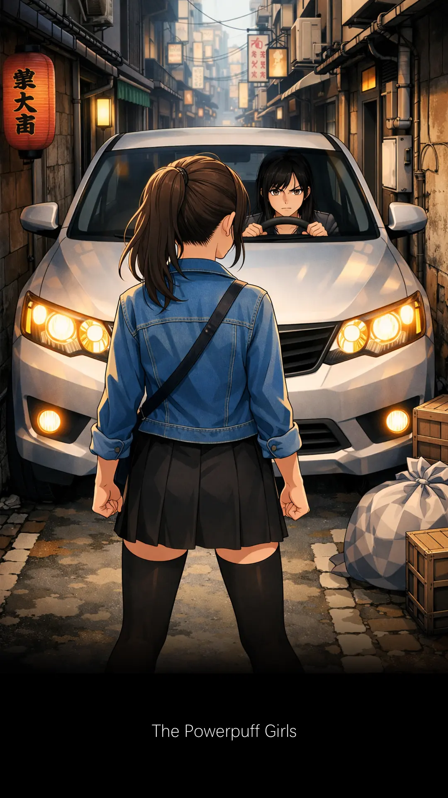
有一次放工经过小巷，寻猫启示那条小巷。
由于放工时段，比较多车。
旁边也停了车，路就变得更窄了。
如果前方又有车来，这时候就考验人性了。
Either 是路人，或是车子。
就看谁先礼让，谁的道德留在小巷。
不然谁也过不去。
在这年代，礼让逐渐被遗忘。
我们变得没耐心，心情容易浮躁。
走在我面前的那个女人，
先踏出了她的第一步，显然不想迁就前方那辆车。
我默念她心里的独白：
凭什么我要让你？
接着是我心中的感慨：
这次有戏看了，可惜手上少了爆米花。
若换成我是她，根本不会有眼前这一幕。
每年生日愿望世界和平的人，
生活没有激情，泛不起涟漪，也没有故事。
今年还忘了许愿，产生蝴蝶效应，导致世界大乱。
控制方向盘的是一名安娣。
安娣也不是省油的灯，她直接 lap 油进来。
安娣把那女人当作蚂蚁，整辆车子迎面而来。
Mochiron! Mochi, mochi.
当然啦！当然，当然。
女人反应不慢，及时闪去一边。
不然隔天上新闻，我被警方招去作人证。
就有机会品尝重案组最好喝的咖啡。
女人一怒之下，用力一拳捶去安娣的车屁股。
再狠狠回头瞪着那安娣。
她瞪人的眼神充满了杀气。
如果她手上有一只笔，那只笔都给她折断。
断下那一刻，我赶紧摸自己的脖子，幸好都还在。
没事，还可继续吃瓜子，喝可口可乐，不会漏出来。
整片天空被乌云笼罩，小巷陷入一片黑暗。
不详的气氛开始四处弥漫。
栖息在灯柱上的一对乌鸦，本来与世无争。
此刻受到惊吓，乱了方向。
夫妻本是同林鸟，大难临头各自飞。
你飞你的，我飞我的，从此非诚勿扰。
安娣感觉不妙，立即把车子驾走。
女人把眼神转向我。
双眼对望。
我也真是的，这条小巷一开始就不是我要走的路。
我什么都没看到，要不要一起合照？
合照以后，灯光一闪，我什么都不知道。
我只是一个无辜的路人。
女人对女人，有时一个比一个狠。
事隔几个月后，今日我再遇见那女人。
她肚子微微隆起。
她怀孕了！
那个男人是谁？
我真想知道。
她的男人长什么样子？什么性格？
又是做什么行业？才能驾驭到这样的女人。
她那天如此反应，是不是刚好在那个早晨知道自己有身孕？
我只能凭想象。
那是她保护孩子的身体本能机制。
谁都不能伤害我的孩子。
看着她摸着自己微微隆起的肚子，
想不到凶狠的女人也有温柔的一面。
明知道有些问题，没有答案，还是要问。
如果不怕仁佳那一拳，你就去问。
问吗？问啊！
不要再去多想。
要吗？要啦！
还是不要了啦。
原谅我就是这样的 ...
***
AI 读后感
ChatGPT
答案有没有不重要，问题本身就很好玩
太阳公公
词：颜福荣
曲：母老虎
太阳公公，高挂天空
热到疯，晒到窿
一直没有云朵，一直没有雨下
下雨吧，快点下
求你呀，呀呀，呀~呀~
***
周杰伦有太阳之子
我有太阳公公
但是为何？
越唱越摇篮，唱到宝宝去荷兰。
是爸爸不好。
下次送你去森美兰。
森美兰快要州选了。
阿福需要你的一票。
而我需要的是摇滚。
我要的是嘶吼、丝袜、撕心裂肺。
副歌要咆哮，将满溢的情感，
感动天感动地，毫无保留轰炸出去。
可是母老虎作的曲不够凶，
奏不出我要的摇滚曲风。
我不够胸，那你很长么？
歌词才那几句。
还没开始，已经结束。
现在世界杯。
所以是要比较长短大小是么？
你是什么杯？悲 ...
剧字没来得及说出口。
剧终。
今日的晚霞，
是我见过最漂亮的一次。
或许是最后一次。
最后一次往往最凄美。
在我最后一次，
闭上眼睛之前，
我想对你说：
为了生存，打打杀杀，
男生的细胞才会活跃，
精力才能够源源不绝。
我使劲全力，
不想闭上眼睛，
打是疼骂是爱。
你永远是我的 ...
我的什么？
我的 ...
快点说啊！
我的 ...
菜！大吉利是。
哪有这么容易最后一次。
生命本身就有两次。
第二次的开始 ...
当你明白生命只有一次。
蔡！恩雨呢？
这个可以。
当然可以！
三千个可以。
那个阿雨就是我
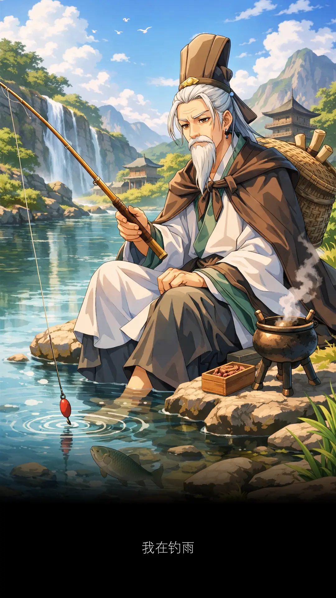
我看着那位还在吃着星洲米粉的同事，再望向手机屏幕，再把眼神放回她身上，怎么越看越像？
嘿，你生日快到了。二五女，生日快乐。